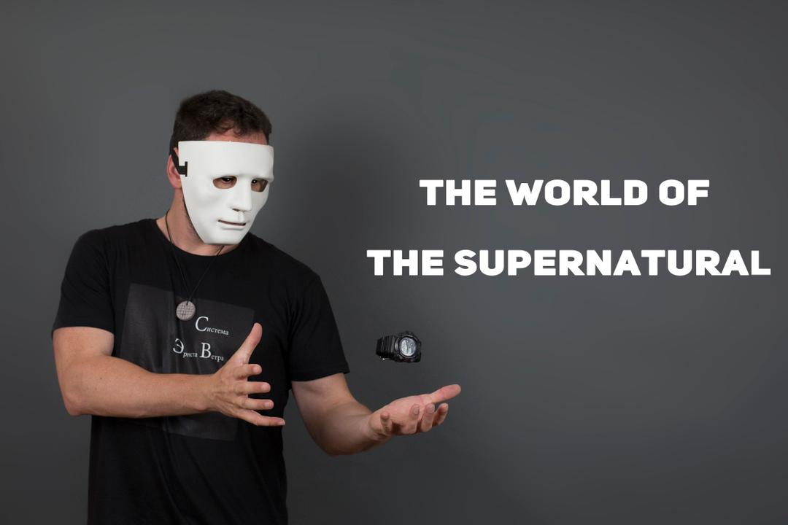
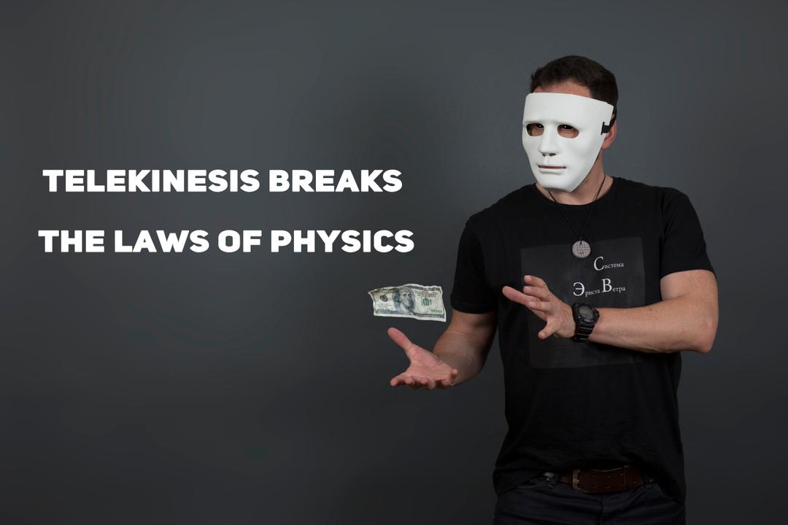
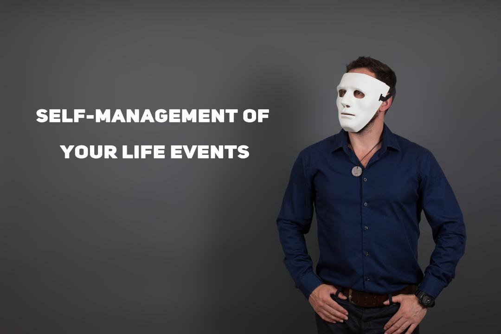
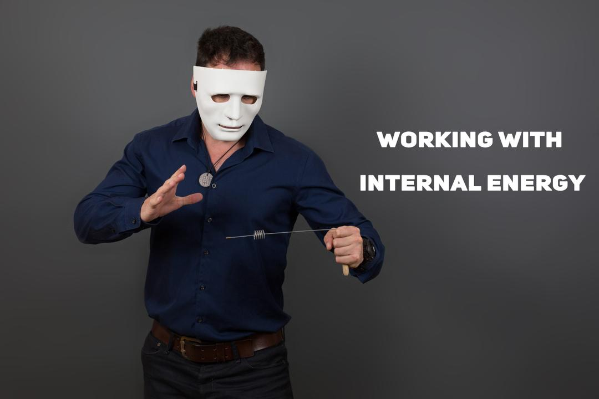

Please watch the videos within this playlist before proceeding (English subtitles are included)
Hello, welcome to my world.
My name is Ernst Veter. I am a practitioner and teacher of superpowers.
I was born in 1974, at the age of 26 I met my teacher, Arne San Jestin, who opened my eyes to the things that are hidden from others. He taught me how to work with energy matter, how to transform it, and how to multiply it. I learned what siddhis are, in simple terms: superpowers. A year later, I boldly moved objects with just one glance. After that I began to discover one after another superpowers, such as levitation, pyrokinesis, teleportation, time travel, telepathy, control of events in my life. Now I can safely say - "I know enough to teach others, and I still know too little to stop teaching myself." I created my online school "Ernst Veter System" in 2016. Since then, it gained recognition as the greatest school for supernatural ability education available to the public. Once upon a time, this knowledge was secret, but now it has become available to a certain circle of people. Who is included in this circle and what is needed to enter it? You will need: willpower, perseverance, the ability to listen and hear, the desire to tear down mountains in your path and a wild thirst for secret knowledge.
My name is Daniel Gregorev. I am the co-founder of Ernst Veter System.
My life goal is to accumulate energy, and make sense of it. As you are introduced to the world of the supernatural I will guide you through all the basics - everything necessary and foundational to prepare yourself for powerful siddhis such as telekinesis, pyrokinesis, and levitation. We will start with extrasensory perception. Basics of harmonious nutrition. Basic exercises to determine the brain activity and frequency. Introduction to the topic of chakras. Analysis of possible field shifts and the basics of field vision. Working with visualization, working with thought. Brain rhythms, changing brain rhythms, meditation and trance. Creating reality and working with the subject field using three specialized approaches. Before we begin the classes, I will have a personal interview with you, to learn about you and welcome you to the school. Well, are you with us?




Starter Program
$70 / mo New!
$799
Here are the details of our beginner program. This is a starter extrasensory perception program, it has a length of 2 months. The tuition cost for training, education, and study materials is $70 per month. After the completion of all 12 lectures & the passing of the final exam there's a special opportunity to advance to a year of study in preferential groups. These preferential groups are secondary programs that include telekinesis, pyrokinesis, and levitation, they are offered at a discount compared to full-priced courses and operate in the same monthly model as the starter program. This program includes the entire base on the power of mind, visualization, meditation, telepathy & control of basic psychic abilities.
While studying under this system, you will definitely improve the quality of your life, understand the whole complex of working with the chakras, visualization, concentration, and with due diligence you will be able to demonstrate the necessary skills. For our part, we will make every effort to pass on all theoretical and practical knowledge to you.
All lessons will be in English, video lectures will be given along with the occasional live zoom meetings.
Upon clicking the button below, you will be directed to a chat where you can introduce yourself to Daniel.
After his approval you will be granted access to the classes.
Good Luck!
Questions & Answers
Without payment, the system would hardly work. It takes time to mentor students who need close supervision on their journey, so this is a full-time job. The students also clearly wouldn't appreciate it fully if it was free. So this is a motivating factor for students who really want to achieve this. Also, by paying for classes, you help our teachers spend less time on regular work, which means that they can devote more time to their personal training and improving courses and teaching methods. This directly improves the school, and therefore your own learning in it and performance.
Scientists and skeptics need to change their rhetoric when encountering esoterics. Superpowers are a sacred art form that are deeply personal for the practitioner. When this person is laughed at in front of cameras and an audience it is demotivating. Scientists and skeptics should have a real desire to keep an open mind in order to understand us instead of creating a show with the intention of humiliation.
There is absolutely no evildoing or negative arts used in this practice. All of this comes from the beauty in connection with the absolute. On a higher level we are connected to all things, everything we practice will help to reconnect to this source, which in nature is benevolent.
It all depends on your perseverance and desire, as well as on your original talent. There are students who achieve results within 5−6 months, and there are those who try to achieve them for a much longer time. The results of the students, in agreement with them, we publish on the YouTube channel, telegram and Instagram.